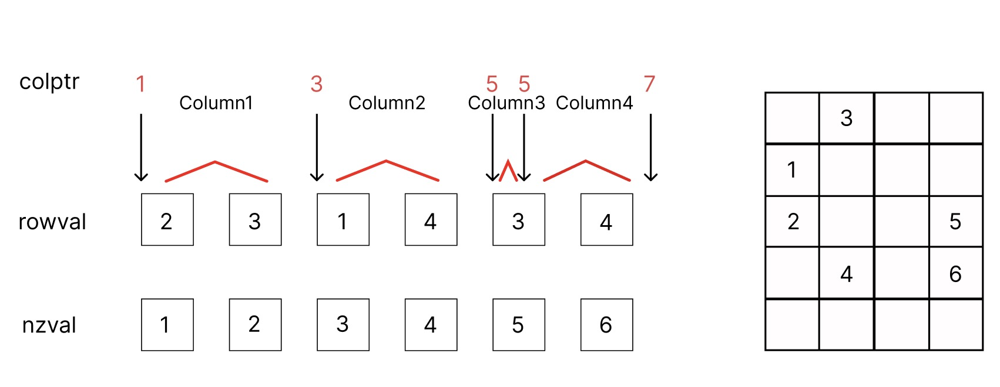

Sparse Matrices and Graphs
Sparse Matrices
Matrices are often sparse. Consider the matrix that we used in the spring chain example, the stiffness matrix is tridiagonal and has only $3n-2$ nonzero elements.
\[\begin{align*} A = \begin{pmatrix} -C & C & 0 & \ldots & 0\\ C & -2C & C & \ldots & 0\\ 0 & C & -2C & \ldots & 0\\ \vdots & \vdots & \vdots & \ddots & \vdots\\ 0 & 0 & 0 & C & -C \end{pmatrix} \end{align*}\]
Storing such a matrix in a dense format requires $n^2$ elements, which is very memory inefficient since it has only $3n-2$ nonzero elements.
COOrdinate (COO) format
The coordinate format means storing nonzero matrix elements into triples
\[\begin{align*} &(i_1, j_1, v_1)\\ &(i_2, j_2, v_2)\\ &\vdots\\ &(i_k, j_k, v_k) \end{align*}\]
To store the stiffness matrix in COO format, we only need to store $3n-2$ triples.
To implement a COO matrix in Julia, we need to define a new data type and implement the AbstractArray interface.
size: return the size of the matrixgetindex: return the element at the given index
Let the number of nonzero elements in a COO matrix $A$ be ${\rm nnz}(A)$. The indexing operation requires enumerating over all ${\rm nnz}(A)$ elements.
using LinearAlgebra
struct COOMatrix{Tv, Ti} <: AbstractArray{Tv, 2} # Julia does not have a COO data type
m::Ti # number of rows
n::Ti # number of columns
colval::Vector{Ti} # column indices
rowval::Vector{Ti} # row indices
nzval::Vector{Tv} # values
function COOMatrix(m::Ti, n::Ti, colval::Vector{Ti}, rowval::Vector{Ti}, nzval::Vector{Tv}) where {Tv, Ti}
@assert length(colval) == length(rowval) == length(nzval)
new{Tv, Ti}(m, n, colval, rowval, nzval)
end
end
Base.size(coo::COOMatrix) = (coo.m, coo.n)
Base.size(coo::COOMatrix, i::Int) = getindex((coo.m, coo.n), i)
# the number of non-zero elements
nnz(coo::COOMatrix) = length(coo.nzval)
# implement get index for CSC matrix, call with A[i, j]
function Base.getindex(coo::COOMatrix{Tv}, i::Integer, j::Integer) where Tv
@boundscheck checkbounds(coo, i, j)
v = zero(Tv)
for (i2, j2, v2) in zip(coo.rowval, coo.colval, coo.nzval)
if i == i2 && j == j2
v += v2 # accumulate the value, since repeated indices are allowed.
end
end
return v
end
function Base.:(*)(A::COOMatrix{T1}, B::COOMatrix{T2}) where {T1, T2}
@assert size(A, 2) == size(B, 1)
rowval = Int[]
colval = Int[]
nzval = promote_type(T1, T2)[]
for (i, j, v) in zip(A.rowval, A.colval, A.nzval)
for (i2, j2, v2) in zip(B.rowval, B.colval, B.nzval)
if j == i2
push!(rowval, i)
push!(colval, j2)
push!(nzval, v * v2)
end
end
end
return COOMatrix(size(A, 1), size(B, 2), colval, rowval, nzval)
endjulia> using Testjulia> stiffmatrix = COOMatrix(3, 3, [1, 1, 2, 2, 2, 3, 3], [1, 2, 1, 2, 3, 2, 3], [-1.0, 1, 1, -2, 1, 1, -1])3×3 Main.COOMatrix{Float64, Int64}: -1.0 1.0 0.0 1.0 -2.0 1.0 0.0 1.0 -1.0julia> size(stiffmatrix)(3, 3)julia> nnz(stiffmatrix)7julia> dense_matrix = Matrix(stiffmatrix)3×3 Matrix{Float64}: -1.0 1.0 0.0 1.0 -2.0 1.0 0.0 1.0 -1.0julia> @test stiffmatrix * stiffmatrix ≈ dense_matrix ^ 2Test Passed
Most operations on COO matrices are computational expensive. For example, multiplying two COO matrices requires $O({\rm nnz}(A)^2)$ computing time.
Compressed Sparse Column (CSC) format
A CSC format sparse matrix can be constructed with the SparseArrays.sparse function. However, here we will implement a simple CSC matrix from scratch.
struct CSCMatrix{Tv,Ti} <: AbstractMatrix{Tv}
m::Int
n::Int
colptr::Vector{Ti}
rowval::Vector{Ti}
nzval::Vector{Tv}
function CSCMatrix(m::Int, n::Int, colptr::Vector{Ti}, rowval::Vector{Ti}, nzval::Vector{Tv}) where {Tv, Ti}
@assert length(colptr) == n + 1
@assert length(rowval) == length(nzval) == colptr[end] - 1
new{Tv, Ti}(m, n, colptr, rowval, nzval)
end
end
Base.size(A::CSCMatrix) = (A.m, A.n)
Base.size(A::CSCMatrix, i::Int) = getindex((A.m, A.n), i)
# the number of non-zero elements
nnz(csc::CSCMatrix) = length(csc.nzval)
# convert a COO matrix to a CSC matrix
function CSCMatrix(coo::COOMatrix{Tv, Ti}) where {Tv, Ti}
m, n = size(coo)
# sort the COO matrix by column
order = sortperm(1:nnz(coo); by=i->coo.rowval[i] + m * (coo.colval[i]-1))
colptr, rowval, nzval = similar(coo.rowval, n+1), similar(coo.rowval), similar(coo.nzval)
k = 0
ipre, jpre = 0, 0
colptr[1] = 1
for idx in order
i, j, v = coo.rowval[idx], coo.colval[idx], coo.nzval[idx]
# values with the same indices are accumulated
if i == ipre && j == jpre
nzval[k] += v
else
k += 1
if j != jpre
# a new column starts
colptr[jpre+1:j+1] .= k
end
rowval[k] = i
nzval[k] = v
ipre, jpre = i, j
end
end
colptr[jpre+1:end] .= k + 1
resize!(rowval, k)
resize!(nzval, k)
return CSCMatrix(m, n, colptr, rowval, nzval)
end
# implement get index for CSC matrix, call with A[i, j]
function Base.getindex(A::CSCMatrix{T}, i::Int, j::Int) where T
@boundscheck checkbounds(A, i, j)
for k in nzrange(A, j)
if A.rowval[k] == i
return A.nzval[k]
end
end
return zero(T)
end
function Base.:*(A::CSCMatrix{T1}, B::CSCMatrix{T2}) where {T1, T2}
T = promote_type(T1, T2)
@assert size(A, 2) == size(B, 1)
rowval, colval, nzval = Int[], Int[], T[]
for j2 in 1:size(B, 2) # enumerate the columns of B
for k2 in nzrange(B, j2) # enumerate the rows of B
v2 = B.nzval[k2]
for k1 in nzrange(A, B.rowval[k2]) # enumerate the rows of A
push!(rowval, A.rowval[k1])
push!(colval, j2)
push!(nzval, A.nzval[k1] * v2)
end
end
end
return CSCMatrix(COOMatrix(size(A, 1), size(B, 2), colval, rowval, nzval))
end
# return the range of non-zero elements in the j-th column
nzrange(A::CSCMatrix, j::Int) = A.colptr[j]:A.colptr[j+1]-1nzrange (generic function with 1 method)julia> coo_matrix = COOMatrix(5, 4, [1, 1, 2, 2, 4, 4], [2, 3, 1, 4, 3, 4], [1, 2, 3, 4, 5, 6])5×4 Main.COOMatrix{Int64, Int64}: 0 3 0 0 1 0 0 0 2 0 0 5 0 4 0 6 0 0 0 0julia> csc_matrix = CSCMatrix(coo_matrix)5×4 Main.CSCMatrix{Int64, Int64}: 0 3 0 0 1 0 0 0 2 0 0 5 0 4 0 6 0 0 0 0
The csc_matrix has type CSCMatrix, which contains 5 fields
julia> fieldnames(csc_matrix |> typeof)(:m, :n, :colptr, :rowval, :nzval)julia> csc_matrix.m, csc_matrix.n(5, 4)julia> csc_matrix.colptr5-element Vector{Int64}: 1 3 5 5 7julia> csc_matrix.rowval6-element Vector{Int64}: 2 3 1 4 3 4julia> csc_matrix.nzval6-element Vector{Int64}: 1 2 3 4 5 6

The m, n, rowval and nzval have the same meaning as those in the COO format. colptr is an integer vector of size $n+1$, where colptr[j] is the index in rowval and nzval of the first nonzero element in the $j$-th column, and colptr[j+1] is the index of the first nonzero element in the $(j+1)$-th column. Hence the $j$-th column of the matrix is stored in rowval[colptr[j]:colptr[j+1]-1] and nzval[colptr[j]:colptr[j+1]-1].
The number of operations required to index an element in the $j$-th column of a CSC matrix is linear to the nonzero elements in the $j$-th column. To get an element from the 2nd row and 3rd column of a CSC matrix, we can use the following code
julia> csc_matrix[2, 3]0
The row indices and values of nonzero elements in the 3rd column can be obtained by
julia> rows3 = csc_matrix.rowval[csc_matrix.colptr[3]:csc_matrix.colptr[4]-1]Int64[]julia> val3 = csc_matrix.nzval[csc_matrix.colptr[3]:csc_matrix.colptr[4]-1]Int64[]julia> csc_matrix.rowval[nzrange(csc_matrix, 3)] # or equivalently, we can use `nzrange`Int64[]
Multiplying two CSC matrices is much faster than multiplying two COO matrices. The time complexity of multiplying two CSC matrices $A$ and $B$ is $O({\rm nnz}(A){\rm nnz}(B)/n)$.
julia> csc_matrix2 = CSCMatrix(COOMatrix(coo_matrix.n, coo_matrix.m, coo_matrix.rowval, coo_matrix.colval, coo_matrix.nzval)) # transpose4×5 Main.CSCMatrix{Int64, Int64}: 0 1 2 0 0 3 0 0 4 0 0 0 0 0 0 0 0 5 6 0julia> @test Matrix(csc_matrix) * Matrix(csc_matrix2) ≈ csc_matrix * csc_matrix2Test Passed
Dominant eigenvalue problem
Given a matrix $A \in \mathbb{R}^{n \times n}$, the dominant eigenvalue problem is to find the largest eigenvalue $\lambda_1$ and its corresponding eigenvector $x_1$ such that
\[A x_1 = \lambda_1 x_1.\]
The power method is a simple iterative algorithm to solve the dominant eigenvalue problem. The algorithm starts with a random vector $v_0$ and repeatedly multiplies it with the matrix $A$.
\[v_k = A^k v_0\]
By representing the initial vector $v_0$ as a linear combination of eigenvectors of $A$, i.e. $v_0 = \sum_{i=1}^n c_i x_i$, we have
\[v_k = \sum_{i=1}^n \lambda_i^k c_i x_i\]
where $\lambda_1 > \lambda_2 \geq \ldots \geq \lambda_n$ are the eigenvalues of $A$ and $x_i$ are the corresponding eigenvectors. The power method converges to the eigenvector corresponding to the largest eigenvalue as $k \rightarrow \infty$. The rate of convergence is dedicated by $|\lambda_2/\lambda_1|^k$. The Julia code for the power method is as follows.
function power_method(A::AbstractMatrix{T}, n::Int) where T
n = size(A, 2)
x = normalize!(randn(n))
for i=1:n
x = A * x
normalize!(x)
end
return x' * A * x', x
endpower_method (generic function with 1 method)By inverting the sign, $A\rightarrow -A$, we can use the same method to obtain the smallest eigenvalue.
The Krylov subspace method
Let $A \in \mathbb{C}^{n \times n}$ be a large sparse matrix, the Arnoldi and Lanczos algorithms can be used to obtain its largest/smallest eigenvalue, with much faster convergence speed comparing with the power method.
The key idea of these algorithms is to generate an orthogonal matrix $Q \in \mathbb{C}^{n\times k}$, $Q^\dagger Q = I$, such that
\[Q^\dagger A Q = B.\]
We have the following property
\[\lambda_1(B) \leq \lambda_1(A),\]
where $\lambda_1(A)$ is the largest eigenvalue of $A$. By chooing $Q$ carefully, such that ${\rm span}(Q)$ contains the dominant eigenvectors of $A$, then $\lambda_1(B) = \lambda_1(A)$. When the equality holds, we have
\[By_1 = \lambda_1(B)y_1\]
where $y_i$ is the $i$-th eigenvector of $B$. By multiplying $y^\dagger$ on the left, we have
\[y_1^\dagger Q^\dagger A Q y_1 = \lambda_1(B)\]
Hence, the eigenvectors of $B$ are related to the eigenvectors of $A$ by the orthogonal matrix $Q$.
Inspired by the power method, we can define the $Q$ as the Krylov subspace that generated from a random initial vector $q_1$.
\[\mathcal{K}(A, q_1, k) = {\rm span}\{q_1, Aq_1, A^2q_1, \ldots, A^{k-1}q_1\}\]
The Arnoldi and Lanczos algorithm are two special cases of the Krylov subspace method. The Arnoldi algorithm is used to solve the eigenvalue problem, while the Lanczos algorithm is used to solve the symmetric eigenvalue problem.
KrylovKit.jl
The Julia package KrylovKit.jl contains many Krylov space based algorithms. KrylovKit.jl accepts general functions or callable objects as linear maps, and general Julia objects with vector like behavior (as defined in the docs) as vectors. The high level interface of KrylovKit is provided by the following functions:
linsolve: solve linear systemseigsolve: find a few eigenvalues and corresponding eigenvectorsgeneigsolve: find a few generalized eigenvalues and corresponding vectorssvdsolve: find a few singular values and corresponding left and right singular vectorsexponentiate: apply the exponential of a linear map to a vectorexpintegrator: exponential integrator for a linear non-homogeneous ODE, computes a linear combination of theϕⱼfunctions which generalizeϕ₀(z) = exp(z).
The Lanczos algorithm
The Lanczos algorithm is used to solve the symmetric eigenvalue problem. Given a symmetric matrix $A \in \mathbb{R}^{n \times n}$, the Lanczos algorithm generates an orthogonal matrix $Q \in \mathbb{R}^{n \times k}$, such that
\[Q^T A Q = T\]
where $T$ is a tridiagonal matrix
\[T = \left(\begin{matrix} \alpha_1 & \beta_1 & 0 & \ldots & 0\\ \beta_1 & \alpha_2 & \beta_2 & \ldots & 0\\ 0 & \beta_2 & \alpha_3 & \ldots & 0\\ \vdots & \vdots & \vdots & \ddots & \vdots\\ 0 & 0 & 0 & \beta_{k-1} & \alpha_k \end{matrix}\right),\]
Let $Q = [q_1 | q_2 | \ldots | q_n],$ and ${\rm span}(\{q_1, q_2, \ldots, q_k\}) = \mathcal{K}(A, q_1, k)$. We have $Aq_k = \beta_{k-1}q_{k-1} + \alpha_k q_k + \beta_k q_{k+1}$, or equivalently in the recursive style
\[q_{k+1} = (Aq_k - \beta_{k-1}q_{k-1} - \alpha_k q_k)/\beta_k.\]
By multiplying $q_k^T$ on the left, we have
\[\alpha_k = q_k^T A q_k.\]
Since $q_{k+1}$ is normalized, we have
\[\beta_k = \|Aq_k - \beta_{k-1}q_{k-1} - \alpha_k q_k\|_2\]
If at any moment, $\beta_k = 0$, the interation stops due to convergence of a subspace. We have the following reducible form
\[T(\beta_2 = 0) = \left(\begin{array}{cc|ccc} \alpha_1 & \beta_1 & 0 & \ldots & 0\\ \beta_1 & \alpha_2 & 0 & \ldots & 0\\ \hline 0 & 0 & \alpha_3 & \ldots & 0\\ \vdots & \vdots & \vdots & \ddots & \vdots\\ 0 & 0 & 0 & \beta_{k-1} & \alpha_k \end{array}\right),\]
A Julia implementation
function lanczos(A, q1::AbstractVector{T}; abstol, maxiter) where T
# normalize the input vector
q1 = normalize(q1)
# the first iteration
q = [q1]
Aq1 = A * q1
α = [q1' * Aq1]
rk = Aq1 .- α[1] .* q1
β = [norm(rk)]
for k = 2:min(length(q1), maxiter)
# the k-th orthonormal vector in Q
push!(q, rk ./ β[k-1])
Aqk = A * q[k]
# compute the diagonal element as αₖ = qₖᵀ A qₖ
push!(α, q[k]' * Aqk)
rk = Aqk .- α[k] .* q[k] .- β[k-1] * q[k-1]
# compute the off-diagonal element as βₖ = |rₖ|
nrk = norm(rk)
# break if βₖ is smaller than abstol or the maximum number of iteration is reached
if abs(nrk) < abstol || k == length(q1)
break
end
push!(β, nrk)
end
# returns T and Q
return SymTridiagonal(α, β), hcat(q...)
endlanczos (generic function with 1 method)Reorthogonalization
Let $r_0, \ldots, r_{k-1} \in \mathbb{C}_n$ be linearly independent vectors and the corresponding Householder matrices $H_0, \ldots, H_{k-1}$ such that $(H_0\ldots H_{k- 1})^T [r_0\mid\ldots\mid r_{k-1}]$ is an upper triangular matrix. Let $[q_1 \mid \ldots \mid q_k ]$ denote the first $k$ columns of the Householder product $(H_0 \ldots H_{k-1})$, then $q_1, \ldots, q_k$ are orthonormal vectors up to machine precision. The Lanczos algorithm with complete reorthogonalization is as follows:
function lanczos_reorthogonalize(A, q1::AbstractVector{T}; abstol, maxiter) where T
n = length(q1)
# normalize the input vector
q1 = normalize(q1)
# the first iteration
q = [q1]
Aq1 = A * q1
α = [q1' * Aq1]
rk = Aq1 .- α[1] .* q1
β = [norm(rk)]
householders = [householder_matrix(q1)]
for k = 2:min(n, maxiter)
# reorthogonalize rk: 1. compute the k-th householder matrix
for j = 1:k-1
left_mul!(view(rk, j:n), householders[j])
end
push!(householders, householder_matrix(view(rk, k:n)))
# reorthogonalize rk: 2. compute the k-th orthonormal vector in Q
qk = zeros(T, n); qk[k] = 1 # qₖ = H₁H₂…Hₖeₖ
for j = k:-1:1
left_mul!(view(qk, j:n), householders[j])
end
push!(q, qk)
Aqk = A * q[k]
# compute the diagonal element as αₖ = qₖᵀ A qₖ
push!(α, q[k]' * Aqk)
rk = Aqk .- α[k] .* q[k] .- β[k-1] * q[k-1]
# compute the off-diagonal element as βₖ = |rₖ|
nrk = norm(rk)
# break if βₖ is smaller than abstol or the maximum number of iteration is reached
if abs(nrk) < abstol || k == n
break
end
push!(β, nrk)
end
return SymTridiagonal(α, β), hcat(q...)
end
struct HouseholderMatrix{T} <: AbstractArray{T, 2}
v::Vector{T}
β::T
end
# the `mul!` interfaces can take two extra factors.
function left_mul!(B, A::HouseholderMatrix)
B .-= (A.β .* A.v) * (A.v' * B)
return B
end
function householder_matrix(v::AbstractVector{T}) where T
v = copy(v)
v[1] -= norm(v, 2)
return HouseholderMatrix(v, 2/norm(v, 2)^2)
endhouseholder_matrix (generic function with 1 method)julia> using Graphsjulia> n = 10001000julia> graph = random_regular_graph(n, 3){1000, 1500} undirected simple Int64 graphjulia> A = laplacian_matrix(graph)1000×1000 SparseArrays.SparseMatrixCSC{Int64, Int64} with 4000 stored entries: ⎡⢑⣴⠢⣋⠗⣓⢙⠶⠠⠇⡀⢐⠀⠂⠩⣢⠊⡔⡎⡱⢿⡒⢀⠠⡦⣬⡤⠐⣆⡀⠴⠠⡓⣰⠆⡐⠄⢉⠰⡀⎤ ⎢⡬⢢⢑⣴⠨⠇⠰⠐⠘⢙⡁⣣⡀⣀⢜⠁⠹⢍⣥⢅⡐⢡⠪⠐⣄⠢⢆⠣⢆⠕⡀⢱⠨⠞⢚⡉⠫⠝⠐⡜⎥ ⎢⢽⢡⠦⠆⢑⢔⢠⣖⡁⠐⢛⠈⣧⡔⠲⢊⢁⠼⡡⠰⠊⣢⢃⠕⠈⠐⢙⡥⠝⡜⣕⡑⣛⠢⠡⡖⡌⠰⣋⠣⎥ ⎢⢳⡔⢐⠂⢠⢶⠑⢄⠆⢅⢑⠍⢍⣴⡆⡁⡤⠤⠅⠜⢀⣺⠎⢊⢘⠽⣎⠉⣑⠉⡌⡲⡄⡹⠆⠓⠅⠦⣂⢁⎥ ⎢⠤⠆⣖⢀⢁⠈⠌⢅⣛⣼⣻⠌⠃⡨⡨⠎⡑⡤⢥⡠⡆⠕⠊⣳⣰⡩⣶⡫⠰⣣⢁⡏⠙⠠⢴⡛⢢⠔⠆⠃⎥ ⎢⢀⢈⠥⣨⡛⠐⡕⠔⡛⠞⢑⣴⠝⢬⠉⠘⣍⡑⡵⣒⢈⠣⠕⠩⢄⢐⠶⠑⡼⢮⣠⣪⢗⡔⢂⠀⢍⠃⠄⣮⎥ ⎢⠠⠀⠀⢨⢉⠿⢃⣵⡉⡠⡓⣅⢕⣵⢄⠬⡐⠍⠈⡚⡲⢌⠨⢮⣇⠘⠂⠄⣃⠱⢔⡘⢂⠟⣶⢖⠠⠃⢔⡈⎥ ⎢⠣⣢⠖⠑⡸⢂⠌⠩⡢⠎⣃⠀⡀⡕⡑⢌⡽⠈⠈⡕⠍⡖⢻⢕⣀⠒⢂⠸⣀⢉⣇⢚⠦⡜⠕⢢⠤⠏⢌⢂⎥ ⎢⢊⠤⡗⢆⣁⡔⠀⡏⠑⡬⢇⠹⡔⠌⡓⠋⠱⢆⠵⠄⡙⡜⢀⢫⡡⡡⢈⠢⢰⠴⣡⠋⠎⠇⢄⢐⠃⣀⣆⠌⎥ ⎢⢎⡩⠅⢟⢁⡊⣁⠅⠁⡳⢱⢫⣢⠠⢆⠤⠑⠇⢟⢕⡨⢠⣆⡔⢒⢆⣊⠒⢰⡊⢗⡄⠲⠡⡁⠊⢳⣤⢤⠌⎥ ⎢⢻⠳⠔⣈⠪⣠⣠⣰⢌⠍⠦⡐⡘⢎⢣⠥⣓⠬⠂⣊⢱⢖⠆⣪⠂⣨⠫⣓⠡⠠⠉⠎⡭⢜⡢⠻⡈⢚⠠⠾⎥ ⎢⠀⡐⢊⠂⢍⠔⡪⢁⢮⣠⡕⡁⡢⣆⢟⢖⡤⣐⢈⠽⡨⣡⠵⢇⡾⣆⢂⡊⠵⠬⣈⠶⠉⠊⠕⢐⠵⢠⠽⢄⎥ ⎢⡈⣯⠠⡙⢂⠀⣖⡔⡔⡺⢀⢑⣉⠙⢠⠘⠅⡪⠸⢔⡈⣠⠺⢯⡵⣯⢊⠐⡴⠪⢬⡢⢉⡤⠤⡮⠻⠈⠝⠀⎥ ⎢⢀⠋⠬⡑⠗⡴⡎⠙⡼⡻⢜⠃⠈⠄⣈⡐⠢⡐⢪⠘⢯⢢⡨⠰⢊⠐⢑⢔⠥⠬⠂⡈⡊⠦⡂⠨⠁⣕⣫⡄⎥ ⎢⠈⠹⢌⠕⣓⠥⡕⠘⠴⣢⡲⣏⢍⡘⡄⢘⢐⡖⡰⠲⠁⡂⡑⡇⡰⡋⡁⡇⡟⣭⡪⢵⣆⢲⣬⡬⢅⠊⠅⠇⎥ ⎢⠐⡃⢄⣈⢕⠹⢢⡩⡥⠴⡠⣺⣐⠱⣩⢙⡥⠚⠙⠵⡣⠄⢢⡜⠢⡳⡈⠠⢎⣎⠟⢅⡠⡦⡢⠽⢀⢂⡌⠅⎥ ⎢⢙⣨⣢⠆⠻⡘⣄⡩⠓⡀⢙⠵⣬⠔⣈⠧⠮⠅⠜⡂⣃⢏⡣⠀⠃⡴⠪⡌⢨⣙⠠⡮⢑⢔⠗⡣⢴⢐⠄⠀⎥ ⎢⢈⠡⡞⠰⢡⠦⢬⠁⣴⠳⠈⠐⢸⢟⠱⣁⢀⢑⡡⠈⣬⡊⢑⢁⡠⡧⡈⡈⡂⡿⣌⡎⠽⡡⠛⢄⡸⢇⠺⠁⎥ ⎢⡄⢁⣏⠆⢂⡉⠡⡅⢈⠖⠧⠑⠤⠂⡤⠇⠉⢠⠙⣶⣢⢈⠑⣃⡛⠂⢅⢤⡡⠑⠠⢐⢐⢓⠶⢎⣱⢞⠪⢥⎥ ⎣⠐⠢⣐⠤⠯⡘⠌⢘⠬⠁⡠⣥⡐⠱⠢⢑⡈⠝⡀⠗⣠⡆⠓⢇⠓⠁⠋⠾⠥⠅⠆⠍⠀⠁⠞⠂⠎⣆⣕⢝⎦julia> q1 = randn(n)1000-element Vector{Float64}: -0.2798992683876688 0.2540952938230789 -1.8728733470446715 -0.5240080512264115 0.4764583466524249 0.2691572657958543 -1.0359625931542893 0.43750096426168533 0.14454577498205987 0.5462078907373774 ⋮ 0.8615180938149529 -0.26924961218370275 -0.24905349692094578 -1.8253512596089756 0.03821971498115897 0.6563212352548214 -0.10882456058881557 -0.6528485954493541 0.6173055471548812julia> tr, Q = lanczos_reorthogonalize(A, q1; abstol=1e-5, maxiter=100)([2.967077381379064 1.7264122677709863 … 0.0 0.0; 1.7264122677709863 2.999445293953057 … 0.0 0.0; … ; 0.0 0.0 … 3.017956050384541 1.3848382241364177; 0.0 0.0 … 1.3848382241364177 3.0146895739666384], [-0.009040876083137347 -0.054423630238313 … 0.007602491135204657 0.04239063152167306; 0.008207395746319276 -0.022639438349477032 … 0.0449514388049013 -0.01686604598702264; … ; -0.021087312183799573 0.005064649670094805 … -0.03274995478102622 -0.04117363192237187; 0.019939255252110023 -0.012352262693541378 … -0.018470885748822385 -0.029183548748822313])julia> eigen(tr)LinearAlgebra.Eigen{Float64, Float64, Matrix{Float64}, Vector{Float64}} values: 100-element Vector{Float64}: 1.7763568394002505e-15 0.18621404522776258 0.18862844781462026 0.20254124675487883 0.21060799522773266 0.22504830038720502 0.2408249537262206 0.26068536689459343 0.2824276824197822 0.30820010753776383 ⋮ 5.705042975178501 5.726227126852876 5.7454703453294105 5.76229338018748 5.781728115291298 5.791354422055812 5.798205651673447 5.804473180334388 5.813914561994451 vectors: 100×100 Matrix{Float64}: 0.0401093 0.0136767 … 0.0276439 0.028569 0.00548174 -0.0689333 -0.0220301 0.045333 0.0469538 0.00903934 0.0919759 0.0256592 0.0529392 0.0551019 0.0106861 -0.133289 -0.0306529 0.0543435 0.0570669 0.0112133 0.180578 0.0333656 0.0574558 0.0610426 0.0122 -0.245182 -0.034435 … 0.0612925 0.0661028 0.0134977 0.338661 0.0353496 0.0649953 0.0712766 0.0148987 -0.408514 -0.029709 0.0709982 0.0792306 0.0169631 0.427791 0.0166007 0.0795084 0.0903241 0.0198097 -0.399437 2.6886e-5 0.0861535 0.099634 0.0223773 ⋮ ⋱ -6.43072e-14 0.0223303 0.152465 -0.0389912 0.0099232 4.1984e-14 -0.0185465 0.151934 -0.0384017 0.00960909 -3.08723e-14 0.0172786 0.123288 -0.0308759 0.00762338 2.14515e-14 -0.0147041 0.098354 -0.0244148 0.00595088 -1.39208e-14 0.0116007 … 0.0818409 -0.0201432 0.00484845 9.47202e-15 -0.00937002 0.0668005 -0.0163342 0.0038937 -6.37386e-15 0.00724635 0.0485466 -0.0118116 0.00279472 3.73682e-15 -0.00469826 0.0324156 -0.00785751 0.00184879 -1.71656e-15 0.0023003 0.0161272 -0.00390044 0.000914638julia> using KrylovKitjulia> eigsolve(A, q1, 2, :SR)([3.1584051133909092e-15, 0.18617563582714736], [[0.0316227766016839, 0.0316227766016836, 0.03162277660168392, 0.031622776601683715, 0.0316227766016838, 0.03162277660168392, 0.03162277660168384, 0.03162277660168359, 0.03162277660168374, 0.03162277660168377 … 0.03162277660168398, 0.0316227766016838, 0.03162277660168356, 0.031622776601683854, 0.03162277660168372, 0.031622776601683965, 0.031622776601683666, 0.031622776601683764, 0.0316227766016839, 0.0316227766016838], [-0.029221729901039738, -0.009519421604056597, 0.017205314656116234, -0.01931629212864574, 0.012037566587888023, -0.06485314818082609, -0.023002002201458958, 0.059977394338607264, 0.04631019064190145, -0.0037633939308527498 … 0.01387715011320562, -0.025106312847941105, 0.017142732313913913, -0.005880456083830922, 0.023255650713923152, 0.026641404927613938, 0.0009718028883606336, 0.007942456134679423, 0.03126033155650276, -0.02356356206444149]], ConvergenceInfo: 2 converged values after 22 iterations and 282 applications of the linear map; norms of residuals are given by (0.0, 6.644193142682016e-13). )
Notes on Lanczos
A sophisticated Lanczos implementation should consider the following aspects:
- In practice, storing all $q$ vectors is not necessary.
- Blocking technique can be used to improve the solution, especially when the matrix has degenerate eigenvalues.
- Restarting technique can be used to improve the solution without increasing the memory usage.
These techniques could be found in Ref.[Golub2013].
The Arnoldi algorithm
If $A$ is not symmetric, then the orthogonal tridiagonalization $Q^T A Q = T$ does not exist in general. The Arnoldi approach involves the column by column generation of an orthogonal $Q$ such that $Q^TAQ = H$ is a Hessenberg matrix.
\[H = \left(\begin{matrix} h_{11} & h_{12} & h_{13} & \ldots & h_{1k}\\ h_{21} & h_{22} & h_{23} & \ldots & h_{2k}\\ 0 & h_{32} & h_{33} & \ldots & h_{3k}\\ \vdots & \vdots & \vdots & \ddots & \vdots\\ 0 & 0 & 0 & \ldots & h_{kk} \end{matrix}\right)\]
That is, $h_{ij} = 0$ for $i>j+1$.
function arnoldi_iteration(A::AbstractMatrix{T}, x0::AbstractVector{T}; maxiter) where T
h = Vector{T}[]
q = [normalize(x0)]
n = length(x0)
@assert size(A) == (n, n)
for k = 1:min(maxiter, n)
u = A * q[k] # generate next vector
hk = zeros(T, k+1)
for j = 1:k # subtract from new vector its components in all preceding vectors
hk[j] = q[j]' * u
u = u - hk[j] * q[j]
end
hkk = norm(u)
hk[k+1] = hkk
push!(h, hk)
if abs(hkk) < 1e-8 || k >=n # stop if matrix is reducible
break
else
push!(q, u ./ hkk)
end
end
# construct `h`
kmax = length(h)
H = zeros(T, kmax, kmax)
for k = 1:length(h)
if k == kmax
H[1:k, k] .= h[k][1:k]
else
H[1:k+1, k] .= h[k]
end
end
return H, hcat(q...)
endarnoldi_iteration (generic function with 1 method)julia> import SparseArraysjulia> n = 100100julia> A = SparseArrays.sprand(n, n, 0.1)100×100 SparseArrays.SparseMatrixCSC{Float64, Int64} with 950 stored entries: ⎡⠀⠠⠀⢆⠀⠈⠀⠀⠀⠀⡀⠒⠨⣀⠀⠀⠄⣀⠅⠀⠂⡠⠂⠨⠤⠀⢂⢀⠠⠂⠄⠀⢐⢀⠈⠐⠁⠠⠂⠀⎤ ⎢⡀⠀⠈⠤⠌⠠⠄⢐⠂⡆⡀⡀⠀⠁⠔⠀⠀⢠⡘⠀⠐⠐⠁⠄⠐⡂⡜⠂⡀⠐⠀⠈⠄⠀⠐⡀⠀⠄⢤⠄⎥ ⎢⠀⡤⠀⠀⠀⠵⢀⢀⠀⠀⠆⠌⠠⡈⠐⠁⠀⠀⠀⡀⠄⠀⠠⠂⠠⠡⡀⠠⠢⡡⠠⠈⠀⠀⠊⠄⠠⠐⢀⠈⎥ ⎢⠀⡃⢐⠤⠠⡀⠀⠤⠡⢅⠁⡅⠁⠅⠀⠀⠠⠀⠀⡈⠀⠄⠐⠁⡄⠀⠠⠀⠠⢀⡕⠤⠀⡁⠔⠀⡠⠤⠁⠀⎥ ⎢⢀⡅⠆⠄⠀⠁⠀⡀⠀⠔⠀⠀⡀⠇⢰⠘⠀⠀⡀⠀⠀⠐⠘⠦⠘⠘⠴⠖⠉⠈⠄⠀⠀⢠⡀⠄⠐⠤⠂⠈⎥ ⎢⠀⠆⠀⡐⣀⠀⠀⠐⢢⠀⠉⠐⠀⠠⢀⠔⠄⠠⠸⡀⠘⠈⠀⡀⢀⠀⠀⠁⣀⠀⠀⠀⠀⠠⣁⡈⠠⡄⠁⠠⎥ ⎢⠄⠀⢈⠀⠂⠂⠐⠅⠠⠀⠀⠀⠄⠄⠀⠦⠀⠀⠐⠁⠠⠰⢔⢠⢐⠠⠀⡀⢐⠀⣦⠀⠄⢀⠂⠢⠁⠐⠨⠠⎥ ⎢⠈⡀⠠⠄⠀⡀⠁⠔⠠⠀⠀⡍⠅⡄⠁⡁⡀⠈⠔⡀⠆⠀⠨⠄⠄⢠⠀⣰⢨⠠⠰⠀⠄⠀⠒⠐⢀⠠⠀⠤⎥ ⎢⠂⠀⠠⠄⡁⡂⡄⠠⠢⠀⠈⠄⡐⠀⠀⡄⠐⠄⠀⠢⠔⠀⠀⡁⠀⠀⠌⠀⠀⢄⠠⠠⠉⠀⠠⡰⢊⠅⢀⠄⎥ ⎢⡅⢀⠡⡀⠀⠀⠑⡀⠠⠆⢠⠒⠅⠥⡐⠁⢠⠀⠀⠠⢆⠀⠀⠀⠰⠐⠀⠠⢃⠄⡊⠨⠀⠨⠨⠀⠀⠀⢌⠨⎥ ⎢⢠⠐⠂⡀⠀⡀⠀⠂⠄⠄⠀⠀⠀⡀⠀⠀⠸⠐⢀⡀⢐⡂⠂⠐⠒⠐⠂⢚⠁⠀⠀⠂⠠⠀⠠⡐⠈⠠⠈⡎⎥ ⎢⠈⠄⠀⣢⠠⠀⠀⠌⠀⢄⠀⢒⠀⠄⠀⠀⡁⠐⢀⠀⢐⠁⠰⠄⠂⠠⠘⠈⠄⠀⡀⠔⠑⠔⠊⢀⠀⠀⠁⠘⎥ ⎢⠀⠡⡀⠐⠀⡀⠐⠒⠈⡐⠀⣠⢀⢀⠠⡀⠡⠄⠦⠀⠚⠀⠂⢨⠚⠈⠄⢐⢐⠀⠠⡈⠐⠂⠠⠂⠀⠀⠐⠀⎥ ⎢⠄⠀⠤⢆⠀⠀⢀⠀⠐⠀⠀⡀⠀⡄⠉⠢⠀⠐⢈⠠⠀⠀⢐⠠⠀⠀⡀⢀⠀⠀⠜⠀⢂⠀⢀⠊⡐⡆⠈⠄⎥ ⎢⠀⡂⡠⠀⠐⠐⠑⠊⠀⠂⠀⠆⠀⠂⠐⠆⠂⠢⠀⠰⠁⠀⠑⠄⠂⠂⢀⠠⠘⠐⠁⡒⢆⠈⠈⠀⢓⠀⠂⢀⎥ ⎢⠀⠁⠐⡀⠈⠁⠂⠠⢘⠁⠀⠁⡘⡒⠀⠂⠀⠀⠀⠘⠈⡀⠀⠀⠚⠈⢘⠈⠀⠀⠂⠚⠩⠀⠢⢈⠀⠁⢠⡐⎥ ⎢⠓⠈⡀⣂⠀⠉⡀⠐⠀⠀⠀⢠⠤⠂⠠⠀⠀⠤⠀⣂⠒⠀⠐⢀⠃⠌⠸⠄⠀⠀⠀⠆⠈⠌⢢⠀⠄⠀⠀⠓⎥ ⎢⠠⠂⠠⠂⠂⠂⠊⠀⠀⢈⠀⠐⠀⠂⠂⠔⠀⠂⠀⠁⠦⠀⢘⠀⢰⠐⠐⠄⠀⠀⠑⡂⠉⠠⠁⠁⠨⠀⠐⠄⎥ ⎢⡅⠁⠂⠂⠂⠂⠀⠀⠠⠀⠂⠁⡀⠂⠀⠒⠁⠂⠀⡀⠀⡃⠒⠀⠘⠇⠉⠄⠀⠀⢈⠀⢐⠂⠀⠀⠀⠀⢀⠡⎥ ⎣⠐⠈⢄⠃⡀⠀⠀⠂⠲⠂⠔⠀⠄⠂⠌⠀⠀⡀⡜⠆⠂⠀⠡⠀⠀⠃⢐⠀⡂⠞⠐⢑⠈⠀⠐⢀⢰⠀⠂⠃⎦julia> q1 = randn(n)100-element Vector{Float64}: 0.7384346790283954 -0.731699240815079 0.5744888636491182 -1.1793346131390836 0.08577055154227067 1.312622403778789 -1.6795617435324683 -0.3906672416255987 1.166049642625508 -1.2492819290735764 ⋮ -0.17046313533550483 -0.6119184573173378 -1.0946103855260345 -1.26038599387118 -0.8702181383116981 0.02337146001967375 -0.4073172470209658 1.2173882687074042 -1.5137913881946141julia> h, q = arnoldi_iteration(A, q1; maxiter=20)([0.17030647684293526 -0.03216193220406381 … 0.06927056155291167 0.06009434071002915; 1.7642426641700744 -0.14957969417398836 … 0.010912965345332249 0.063188899936645; … ; 0.0 0.0 … 0.15325383059871275 -0.25956583534810523; 0.0 0.0 … 1.455708057975786 -0.041140331918783725], [0.07938821642704597 -0.07677891429115735 … -0.03376357635679881 -0.07985574447225736; -0.07866409763658867 -0.024106712500289954 … -0.0036473335816722425 0.01963760307364385; … ; 0.13087993575688203 -0.005231544173849358 … 0.01569798916353282 0.15577649399564336; -0.16274587551808511 0.009109053289528189 … -0.12979564923902293 0.019453381609974344])julia> eigen(h).values # naive implementation20-element Vector{ComplexF64}: -1.6044348057417657 - 0.2335634724990427im -1.6044348057417657 + 0.2335634724990427im -1.4419507399316331 - 0.9871880694903662im -1.4419507399316331 + 0.9871880694903662im -0.5879413601626108 - 1.343340140857784im -0.5879413601626108 + 1.343340140857784im -0.45916096073416074 + 0.0im -0.3366051811169546 - 1.736262187492478im -0.3366051811169546 + 1.736262187492478im -0.24653730585240113 - 1.0114362376587338im -0.24653730585240113 + 1.0114362376587338im 0.3669732473608124 - 1.3341696770796487im 0.3669732473608124 + 1.3341696770796487im 0.9287400763159976 - 1.043307952041792im 0.9287400763159976 + 1.043307952041792im 1.0899660682429508 - 0.9218515119714339im 1.0899660682429508 + 0.9218515119714339im 1.4569237726076851 - 0.2250881035203174im 1.4569237726076851 + 0.2250881035203174im 4.7344586615889455 + 0.0imjulia> eigsolve(A, q1, 2, :LR) # KrylovKit.eigsolve(ComplexF64[4.73445865929692 + 0.0im, 1.598506647807177 + 0.23049705423491035im, 1.598506647807177 - 0.23049705423491035im], Vector{ComplexF64}[[-0.0788419269227912 + 0.0im, -0.059620214435108884 + 0.0im, -0.08106773221161104 + 0.0im, -0.06093763385510514 + 0.0im, -0.12669245065523002 + 0.0im, -0.05992749471871177 + 0.0im, -0.1403681672687834 + 0.0im, -0.07128463148306746 + 0.0im, -0.10321092483309716 + 0.0im, -0.12717732587894676 + 0.0im … -0.07610852884538874 + 0.0im, -0.10038370049320791 + 0.0im, -0.08482187245598236 + 0.0im, -0.04755742629551132 + 0.0im, -0.08412914865538297 + 0.0im, -0.12174492914704901 + 0.0im, -0.20825724667796222 + 0.0im, -0.04247032055480351 + 0.0im, -0.1305066004659602 + 0.0im, -0.06622909791548924 + 0.0im], [0.0005086279437712363 - 0.06466480993106818im, -0.009644903013217384 - 0.006909936575834005im, 0.041092899182102516 + 0.05380709798273923im, -0.0037262928636372524 - 0.0777756189097812im, 0.07962554750797143 + 0.07690516365534396im, -0.011766262917404308 + 0.03215238222633639im, -0.0051525231521844595 + 0.2992365244584084im, 0.0490797782620945 - 0.07380104060001107im, 0.011758236824174153 - 0.14070718842057228im, 0.0897437945059337 + 0.02690083128604463im … 0.01728672798401664 + 0.0020832003164693923im, -0.013970178836037907 + 0.15357470250969268im, -0.054653531704516624 - 0.11393632779490474im, -0.009097995645560998 + 0.012460325303339336im, 0.03779698689780876 + 0.05999928165106444im, -0.012908828141185264 - 0.041604556363258945im, 0.0224728242488152 - 0.07730671341108462im, 0.02990449860283537 - 0.0010094771346815632im, -0.036902857125402956 - 0.09021857958111587im, -0.027656199651883418 + 0.09041430884727093im], [0.0005086279437712363 + 0.06466480993106818im, -0.009644903013217384 + 0.006909936575834005im, 0.041092899182102516 - 0.05380709798273923im, -0.0037262928636372524 + 0.0777756189097812im, 0.07962554750797143 - 0.07690516365534396im, -0.011766262917404308 - 0.03215238222633639im, -0.0051525231521844595 - 0.2992365244584084im, 0.0490797782620945 + 0.07380104060001107im, 0.011758236824174153 + 0.14070718842057228im, 0.0897437945059337 - 0.02690083128604463im … 0.01728672798401664 - 0.0020832003164693923im, -0.013970178836037907 - 0.15357470250969268im, -0.054653531704516624 + 0.11393632779490474im, -0.009097995645560998 - 0.012460325303339336im, 0.03779698689780876 - 0.05999928165106444im, -0.012908828141185264 + 0.041604556363258945im, 0.0224728242488152 + 0.07730671341108462im, 0.02990449860283537 + 0.0010094771346815632im, -0.036902857125402956 + 0.09021857958111587im, -0.027656199651883418 - 0.09041430884727093im]], ConvergenceInfo: 3 converged values after 9 iterations and 121 applications of the linear map; norms of residuals are given by (0.0, 1.2270748615016097e-13, 1.2270748615016097e-13). )
Graphs
A graph is a pair $G = (V, E)$, where $V$ is a set of vertices and $E$ is a set of edges. In Julia, the package Graphs.jl provides a simple graph data structure. The following code creates a simple graph with 10 vertices.
julia> using Graphsjulia> g = SimpleGraph(10) # create an empty graph with 10 vertices{10, 0} undirected simple Int64 graphjulia> add_vertex!(g) # add a vertextruejulia> add_edge!(g, 3, 11) # add an edge between vertex 3 and 11truejulia> has_edge(g, 3, 11) # check if there is an edge between vertex 3 and 11truejulia> rem_vertex!(g, 7) # remove vertex 7truejulia> has_edge(g, 3, 11)falsejulia> has_edge(g, 3, 7) # vertex number 11 "renamed" to vertex number 7truejulia> neighbors(g, 3) # get the neighbors of vertex 31-element Vector{Int64}: 7
A graph can be represented by an adjacency matrix $A \in \mathbb{R}^{n \times n}$, where $n$ is the number of vertices. The element $A_{ij}$ is 1 if there is an edge between vertex $i$ and vertex $j$, and 0 otherwise.
For example, the adjacency matrix of the Petersen graph is
julia> using Graphsjulia> graph = smallgraph(:petersen){10, 15} undirected simple Int64 graphjulia> adj_matrix = adjacency_matrix(graph)10×10 SparseArrays.SparseMatrixCSC{Int64, Int64} with 30 stored entries: ⋅ 1 ⋅ ⋅ 1 1 ⋅ ⋅ ⋅ ⋅ 1 ⋅ 1 ⋅ ⋅ ⋅ 1 ⋅ ⋅ ⋅ ⋅ 1 ⋅ 1 ⋅ ⋅ ⋅ 1 ⋅ ⋅ ⋅ ⋅ 1 ⋅ 1 ⋅ ⋅ ⋅ 1 ⋅ 1 ⋅ ⋅ 1 ⋅ ⋅ ⋅ ⋅ ⋅ 1 1 ⋅ ⋅ ⋅ ⋅ ⋅ ⋅ 1 1 ⋅ ⋅ 1 ⋅ ⋅ ⋅ ⋅ ⋅ ⋅ 1 1 ⋅ ⋅ 1 ⋅ ⋅ 1 ⋅ ⋅ ⋅ 1 ⋅ ⋅ ⋅ 1 ⋅ 1 1 ⋅ ⋅ ⋅ ⋅ ⋅ ⋅ ⋅ 1 ⋅ 1 1 ⋅ ⋅

The Laplacian matrix $L_{n\times n}$ of a graph $G$ is defined as $L = D - A$, where $D$ is the degree matrix of the graph. The degree matrix is a diagonal matrix, where the diagonal element $D_{ii}$ is the degree of vertex $i$. The Laplacian matrix is symmetric and positive semidefinite.
julia> lap_matrix = laplacian_matrix(graph)10×10 SparseArrays.SparseMatrixCSC{Int64, Int64} with 40 stored entries: 3 -1 ⋅ ⋅ -1 -1 ⋅ ⋅ ⋅ ⋅ -1 3 -1 ⋅ ⋅ ⋅ -1 ⋅ ⋅ ⋅ ⋅ -1 3 -1 ⋅ ⋅ ⋅ -1 ⋅ ⋅ ⋅ ⋅ -1 3 -1 ⋅ ⋅ ⋅ -1 ⋅ -1 ⋅ ⋅ -1 3 ⋅ ⋅ ⋅ ⋅ -1 -1 ⋅ ⋅ ⋅ ⋅ 3 ⋅ -1 -1 ⋅ ⋅ -1 ⋅ ⋅ ⋅ ⋅ 3 ⋅ -1 -1 ⋅ ⋅ -1 ⋅ ⋅ -1 ⋅ 3 ⋅ -1 ⋅ ⋅ ⋅ -1 ⋅ -1 -1 ⋅ 3 ⋅ ⋅ ⋅ ⋅ ⋅ -1 ⋅ -1 -1 ⋅ 3
The spectral graph theory
Theorem: The number of connected components in the graph is the dimension of the nullspace of the Laplacian and the algebraic multiplicity of the 0 eigenvalue.
julia> graphsize = 10001000julia> graph = random_regular_graph(graphsize, 3){1000, 1500} undirected simple Int64 graphjulia> lmat = laplacian_matrix(graph)1000×1000 SparseArrays.SparseMatrixCSC{Int64, Int64} with 4000 stored entries: ⎡⠱⢆⣈⠈⠀⣆⠨⢳⡧⠰⠁⢆⣁⠇⡖⡄⠑⠄⣆⠸⢀⡚⢌⠴⠵⣧⠀⢗⠆⡰⡻⣗⣂⠓⡔⢤⡀⠂⢐⠀⎤ ⎢⡂⠘⣱⢞⠓⡴⠌⠟⢚⡰⠘⣧⢡⡀⠄⢊⢴⢄⢙⢂⠧⢞⢥⡈⡌⡒⠤⡇⠕⢀⠁⢊⢦⣺⠈⠹⠔⡠⡂⠄⎥ ⎢⠠⢤⢙⡤⣱⢞⣔⠝⠘⡐⠈⢛⡀⡚⢥⢰⠜⠢⠀⡀⣢⡺⠌⢈⠄⣾⠅⠂⡑⣯⢝⣃⣠⠭⠱⢠⡑⠚⠃⡉⎥ ⎢⢦⣂⣦⠅⣔⠝⠱⣦⢱⡑⡏⠀⡌⠠⠖⠕⠎⢀⠉⢥⡳⡖⠟⠌⠜⡀⢏⡖⢀⣀⡎⠁⢉⠭⠜⡑⠎⡆⢀⣙⎥ ⎢⢉⡋⢚⡰⢒⠠⢕⠲⠻⣦⡇⡎⣤⠮⣌⣒⡎⠁⠐⣈⠾⡠⡌⡤⡭⣁⢍⢅⢨⡲⡒⢋⡚⠃⡄⠕⠀⠑⠛⡶⎥ ⎢⠡⢄⠶⣤⣦⢀⠋⠉⡩⠭⡵⢏⠈⢒⠪⡬⣦⡑⣄⢜⢡⢥⠑⠚⢭⢰⢘⣌⠘⠸⠁⠐⢽⢒⡒⡺⠨⣛⠕⡀⎥ ⎢⠥⠜⠁⠲⣠⠨⠂⡉⡠⡟⢢⢀⠑⢄⡆⢑⠢⢨⢀⣽⠃⣄⠾⡧⢯⡁⠇⡰⠫⡿⡢⣳⠄⡐⡩⠱⠤⢲⠣⠡⎥ ⎢⠘⠭⡠⢁⢁⣓⢜⠅⢢⢹⡊⡦⢌⢉⠑⣤⠩⢵⠌⠐⠸⡱⡍⢓⡂⠩⡭⠅⡀⡒⠐⢀⠣⠮⡊⢆⢸⡁⢐⢂⎥ ⎢⠑⠄⠐⢗⠲⡁⠊⢁⠎⠉⢌⠻⡈⣂⢇⣆⡻⣮⠓⡎⠅⡡⡸⠪⢅⢌⢐⠍⠘⠪⠖⣡⠨⠥⡤⡺⡔⡂⡀⢂⎥ ⎢⣈⡙⠳⢐⠀⠠⠇⣄⡐⢠⣀⢝⣄⣴⢂⠁⡹⠤⠟⢅⣖⠏⠄⡖⠐⡛⢰⢄⣭⠊⠬⠊⢢⠈⡼⠦⣓⠣⡙⡋⎥ ⎢⣠⠰⣩⢇⣨⡺⢹⠮⠚⡣⠅⣖⠉⢤⢖⡢⠅⡡⡼⠝⢛⣴⠀⡒⡨⠘⡧⡔⠂⢙⡋⠧⢈⠰⢀⠡⠢⡌⠗⠝⎥ ⎢⢂⡕⡁⠳⡂⢁⡛⠅⠂⡭⣱⠀⠾⡧⢧⢉⡲⡊⢠⠥⢠⠠⡵⢏⡣⠬⢊⢾⡃⢹⡳⡄⡇⡀⠉⢴⣳⡀⣜⠣⎥ ⎢⠵⣧⢢⠩⣠⣥⠒⠡⠇⢫⢃⣓⠏⠳⡌⡈⡁⢕⣴⠠⣂⠊⡉⡎⢱⣶⡁⢉⠌⡀⠌⠏⠁⡣⠓⢀⠂⢘⡕⢐⎥ ⎢⢤⢄⠤⠧⠡⠁⢫⠵⠇⢕⡒⢴⢉⡡⠇⠏⡔⠔⠐⢖⢉⠯⣪⣔⡅⢈⠟⢅⣞⠆⣶⢠⣑⠪⢀⠁⣳⡙⡂⡀⎥ ⎢⢈⡡⠑⢁⡵⣬⠀⢰⢢⡲⣒⡀⣯⡦⢠⠨⡲⡀⡣⠛⣌⢀⣍⣈⠂⠡⠺⠝⠻⣦⢈⡹⠫⠪⣜⠯⠂⠒⡋⡂⎥ ⎢⢿⢮⡡⢀⠷⢱⠎⠉⡼⢈⢁⠀⢬⣪⠐⢀⠜⣡⡢⠃⠯⡌⠙⠮⡦⠅⠘⣛⣆⡰⠟⢅⣬⠄⣪⠌⠊⣮⠺⣨⎥ ⎢⢬⠘⣨⣳⡄⡞⡇⡔⠾⠈⢳⢓⢀⠡⡩⡆⠆⡆⡈⠒⢂⡐⠉⠩⠥⡠⡱⡘⡫⡂⠂⠟⡑⢌⢑⠥⢾⠜⢼⠀⎥ ⎢⠐⣍⣆⡀⠑⣂⢖⠡⢄⠍⣸⡨⢇⡊⠪⢌⣠⡫⠲⡏⠄⡐⢃⣄⠙⢀⠄⠐⡶⡝⡊⠞⠕⡔⠱⢆⢎⢏⢣⡨⎥ ⎢⠠⠈⠐⡡⣱⠈⠪⠥⢄⠀⣦⢢⢠⣃⠖⠲⠰⠩⠽⡘⡈⠦⠙⠺⣈⢀⣝⠺⢨⠀⡪⣤⣚⠗⡮⢕⡕⢍⢂⡄⎥ ⎣⠐⠐⠈⠌⡍⠠⣄⢰⢻⡤⠑⠡⠍⡂⠰⢐⠠⢈⡷⠨⣝⠅⠶⡙⢑⢉⠈⠨⠫⠨⡚⣢⠒⠓⡉⡲⠈⠴⠿⢇⎦julia> q1 = randn(graphsize)1000-element Vector{Float64}: -0.33287847751945854 -0.057142424670184516 1.0828607459284834 0.8253327960949395 0.832317305990979 1.2440449074147535 -1.2256435656040285 -0.04905770442005839 -0.10573391586436706 -0.2106222073403859 ⋮ 0.7120207396250651 -0.4229865738506791 1.074204254883615 -1.406278672280814 -0.8524471222438018 1.1268855954238262 -0.0500485345112083 -0.27952356449940213 0.09784805083364222julia> tri, Q = lanczos(lmat, q1; abstol=1e-8, maxiter=100)([3.0059659157816236 1.7652216225027353 … 0.0 0.0; 1.7652216225027353 2.95283128382382 … 0.0 0.0; … ; 0.0 0.0 … 3.015366696809718 1.439936685134879; 0.0 0.0 … 1.439936685134879 3.0733679691121956], [-0.010309612055364185 -0.009729473856298068 … 0.04151795965074268 0.04421402090032398; -0.0017697636526171538 0.024900999361730295 … -0.03486831380187928 -0.02709714829817379; … ; -0.008657151798445572 0.0007540960836767806 … -0.051166294550382296 0.08017747932172428; 0.003030461602641273 0.0327775907492682 … -0.007225364714529323 0.006321329512787146])julia> -eigen(-tri).values # the eigenvalues of the tridiagonal matrix100-element Vector{Float64}: 5.818119380841456 5.809695794978772 5.805139909580162 5.791727658413604 5.783283881773522 5.764293150899368 5.748690891670651 5.73340270681104 5.7057098409680655 5.683915137870016 ⋮ 0.27358783846900625 0.25649402959967915 0.24019714665147074 0.22344436327758288 0.2149023320767487 0.1967315191522223 0.1878943204373602 0.1700800940970364 8.881784197001252e-16julia> Q' * Q # the orthogonality of the Krylov vectors100×100 Matrix{Float64}: 1.0 -1.09288e-16 -2.04697e-16 … -1.23034e-6 1.69642e-6 -1.09288e-16 1.0 3.39138e-16 2.09512e-6 -2.88881e-6 -2.04697e-16 3.39138e-16 1.0 -2.81206e-6 3.87736e-6 4.89192e-16 -3.01408e-16 -6.45317e-16 3.91162e-6 -5.39346e-6 -1.50921e-16 -3.62557e-16 -1.57426e-16 -5.66663e-6 7.81332e-6 -9.74915e-16 -7.02563e-17 7.73687e-16 … 7.87755e-6 -1.08618e-5 1.30104e-16 -9.36751e-17 -1.63064e-16 -1.1437e-5 1.57697e-5 8.29198e-16 4.85723e-17 -8.56953e-16 1.58318e-5 -2.18294e-5 -1.249e-16 2.18575e-16 2.6628e-16 -2.30238e-5 3.1746e-5 -5.51642e-16 5.55112e-17 4.94396e-16 3.20351e-5 -4.41709e-5 ⋮ ⋱ 9.1334e-8 -1.55531e-7 2.08754e-7 -5.68989e-16 -4.63171e-16 -1.3792e-7 2.34862e-7 -3.15232e-7 9.35016e-16 2.14932e-15 2.02852e-7 -3.45433e-7 4.63639e-7 1.01828e-15 1.32533e-15 -2.92898e-7 4.9877e-7 -6.69449e-7 -1.89952e-16 -2.62811e-15 4.25575e-7 -7.24705e-7 9.72698e-7 … -1.92207e-15 -2.96638e-16 -6.29877e-7 1.07261e-6 -1.43965e-6 1.17181e-15 2.51665e-15 8.88731e-7 -1.5134e-6 2.03129e-6 2.43468e-15 9.99201e-16 -1.23034e-6 2.09512e-6 -2.81206e-6 1.0 -1.70957e-15 1.69642e-6 -2.88881e-6 3.87736e-6 -1.70957e-15 1.0julia> eigsolve(lmat, q1, 2, :SR) # using function `KrylovKit.eigsolve`([-2.900313978578682e-15, 0.17008009373477984], [[-0.031622776601684034, -0.03162277660168324, -0.03162277660168364, -0.031622776601684444, -0.03162277660168345, -0.03162277660168458, -0.031622776601684, -0.0316227766016839, -0.03162277660168402, -0.03162277660168316 … -0.03162277660168361, -0.03162277660168433, -0.03162277660168451, -0.031622776601683465, -0.03162277660168298, -0.03162277660168457, -0.031622776601684104, -0.03162277660168438, -0.03162277660168348, -0.03162277660168412], [0.006582807245239974, -0.01097899366556743, 0.028559037987259374, 0.01514724311539146, 0.001781960915178733, 0.013755758221358603, 0.024743965556688514, 0.0004365259473944575, 0.02816918829835035, 0.03440037274884814 … 0.015473778894377841, 0.03567800790891064, 0.0491049839388542, -0.04839669377240015, 0.017939793051366417, 0.056144515719719165, 0.04324970553888252, -0.009612128488246652, 0.0045481604792757925, 0.011784618035170547]], ConvergenceInfo: 2 converged values after 16 iterations and 210 applications of the linear map; norms of residuals are given by (4.298703845265136e-31, 8.383153779842455e-13). )
NOTE: with larger graph_size, you should see some "ghost" eigenvalues
Graph layout and clustering
Given a graph, we can use the spectral graph theory to detect the number of connected components and the clustering of the graph. What if we are interested in the clustering of the graph? The spectral clustering algorithm is a popular method to partition a graph into clusters[Ng2001]. The algorithm is as follows:
Given a set of points $S = \{s_1, \ldots,s_n\}$ in $\mathbb{R^l}$ that we want to cluster into k subsets:
- Form the affinity matrix $A \in \mathbb{R}^{n\times n}$ defined by $A_{ij} = \exp(-\|s_i -s_j\|_2/2\sigma^2)$ if $i \neq j$, and $A_{ii} = 0$.
- Define $D$ to be the diagonal matrix whose $(i, i)$-element is the sum of $A$'s $i$-th row, and construct the matrix $L = D^{-1/2}AD^{-1/2}$.
- Find $x_1 , x_2, \ldots ,x_k$, the $k$ largest eigenvectors of $L$ (chosen to be orthogonal to each other in the case of repeated eigenvalues), and form the matrix $X = [x_1x_2\ldots x_k] \in \mathbb{R}^{n\times n}$ by stacking the eigenvectors in columns.
- Form the matrix $Y$ from $X$ by renormalizing each of $X$'s rows to have unit length (i.e. $Y_{ij} = X_{ij}/(\sum_j X_{i,j}^2)^{1/2}$).
- Treating each row of $Y$ as a point in $\mathbb{R}^k$, cluster them into $k$ clusters via K-means or any other algorithm (that attempts to minimize distortion).
- Finally, assign the original point $S_i$ to cluster $j$ if and only if row $i$ of the matrix $Y$ was assigned to cluster $j$.
Here, the scaling parameter $\sigma^2$ controls how rapidly the affinity $A_{ij}$ falls off with the distance between $s_i$ and $s_j$, and we will later describe a method for choosing it automatically.
For an implementation of the spectral clustering algorithm, please check the demo.